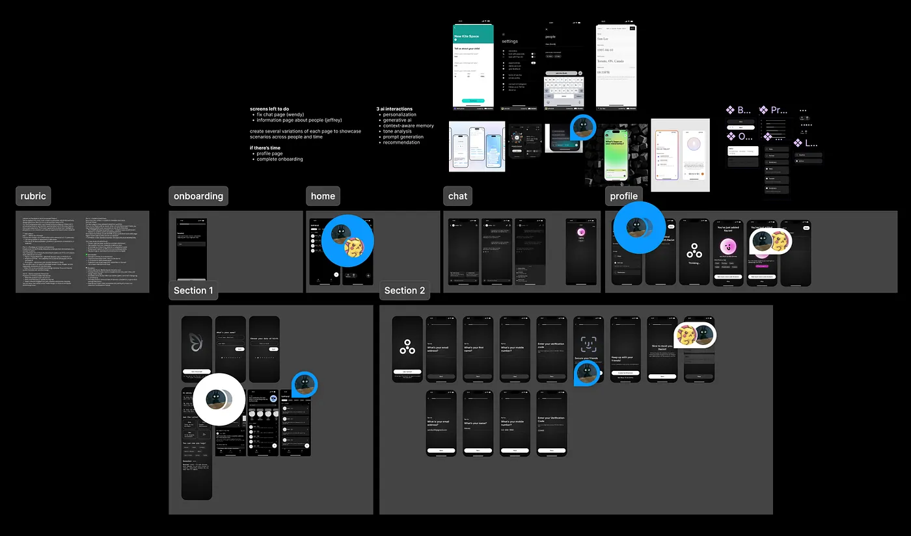
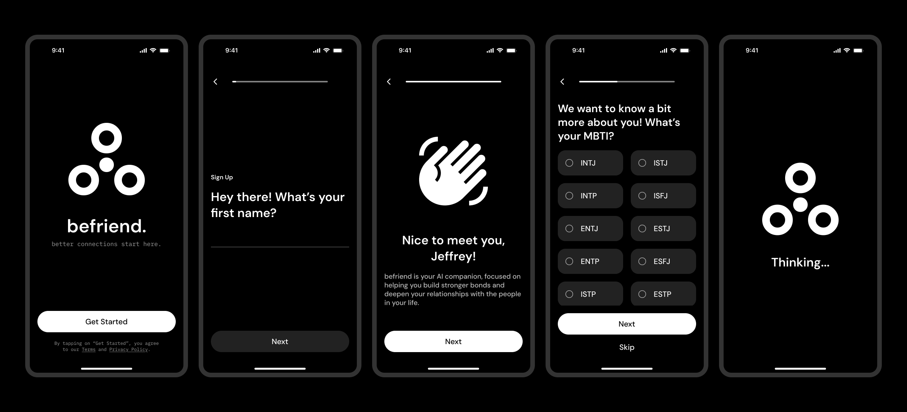
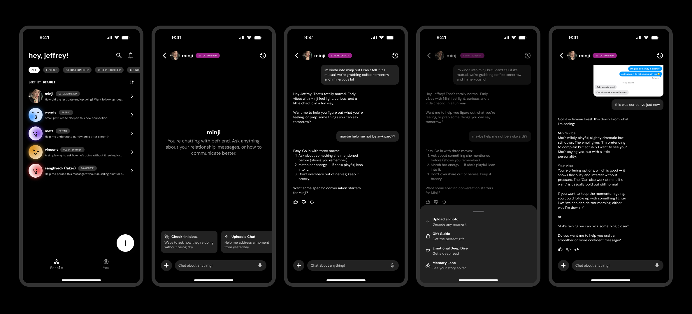
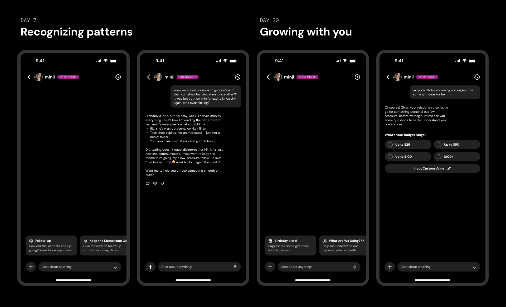

BeFriend, for Understanding Your Relationships
Building and maintaining relationships is one of the most meaningful (and messiest) parts of being human. AI, on the other hand, is structured, logical, and not human at all. But what if we could use its clarity to better navigate our own emotional complexity? befriend does exactly this: an AI-powered relationship companion that learns from your interactions, understands your relational patterns, and supports the very human connections that matter most.
Understanding modern relationship challenges.
To learn about how people navigate relationships today, we conducted:
- Desk research: exploring the current use of AI tools in personal relationships and communication.
- User interviews (1:1): speaking with individuals across dating, friendships, and situationships to uncover real emotional pain points.
From our research insights, we built an interactive persona, Esther, which you can access here. Although our target audience primarily falls within the Gen Z and Generational Alpha age groups, we recognized that our app has the potential to support anyone seeking to improve their relationships through AI.
 Try out our interactive persona here!
Try out our interactive persona here!
The Esther persona reflects common Gen Z behaviors, and her challenges illustrate a broader need for emotional clarity and personalized support in both digital and in-person communication, the core problem our solution aims to address.
Our problem statement was thus formed:
Exploring how AI could support relationships
After understanding the emotional gaps in digital communication, we began exploring how an AI tool could meaningfully support users like Esther. Through this, we now had a foundation for the features on our app’s home page, what the relationship page could look like, and more.
Bringing Structure to Emotion
When we prototyped BeFriend, we knew that supporting real human relationships required more than just AI. So we grounded the prototype in three core principles:
2) Advice that adapts
3) AI supports, never replaces.
BeFriend: Better connections start here
Befriend’s onboarding begins with the standard setup you’d expect , such as name, email, and basic account creation. We kept this portion lightweight to reduce friction and get users into the experience quickly.
After onboarding, users are guided to add their first relationship, which is the core action that shapes the entire befriend experience. To avoid overwhelming users, context input is optional but encouraged, such as their interests, shared history, etc.

The chat interface is the heart of BeFriend. It’s where users come to understand their relationships, process emotions, decode messages, and get guidance based on real context. Early testers often assumed the chat might message the actual person, so clarity became a central design priority.
As the relationship evolves, so does the chat. At day 1, BeFriend guesses what the user might be interested in conversing about based on their initial inputs. By day 7, BeFriend notices patterns in the relationship between the user and their relation. By day 30, it anticipates user needs and offers more personalized advice. And by month 6, it reflects the entire relationship arc with real perspective.
Designing tech for something deeply human
Working on befriend made us realize just how much space there is for technology to support our emotional lives. When designed with intention, it can actually help us navigate some of the most human experiences we have, and we learned how something inherently technical can become softer through thoughtful design choices: tone, visual language, explainability, and the gentle pacing of interactions.
More importantly, befriend taught us how design can bridge the gap between machine intelligence and human complexity. The goal was never to have AI speak for us, but to help us understand ourselves and others better. In the end, this project reminded me that technology doesn’t have to strip away humanity. With care, it can amplify it, helping people show up in their relationships with more confidence, compassion, and intention.